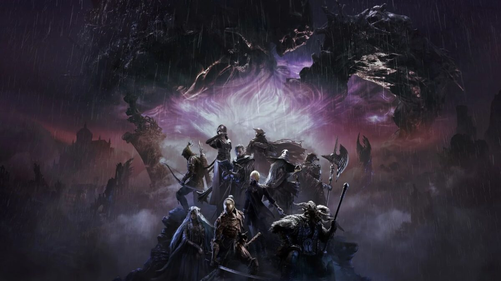
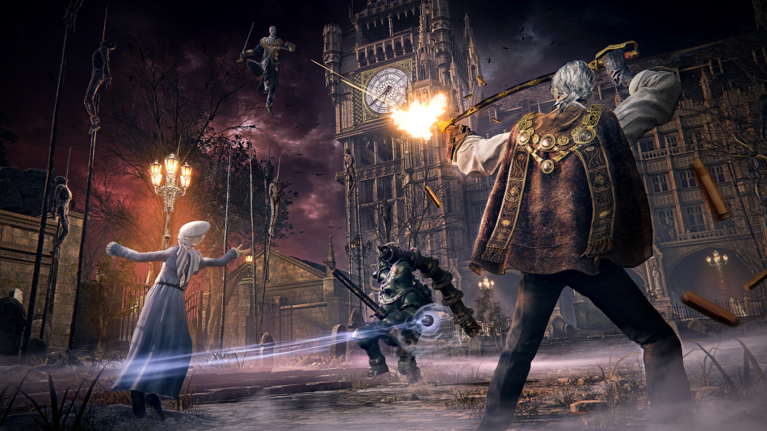
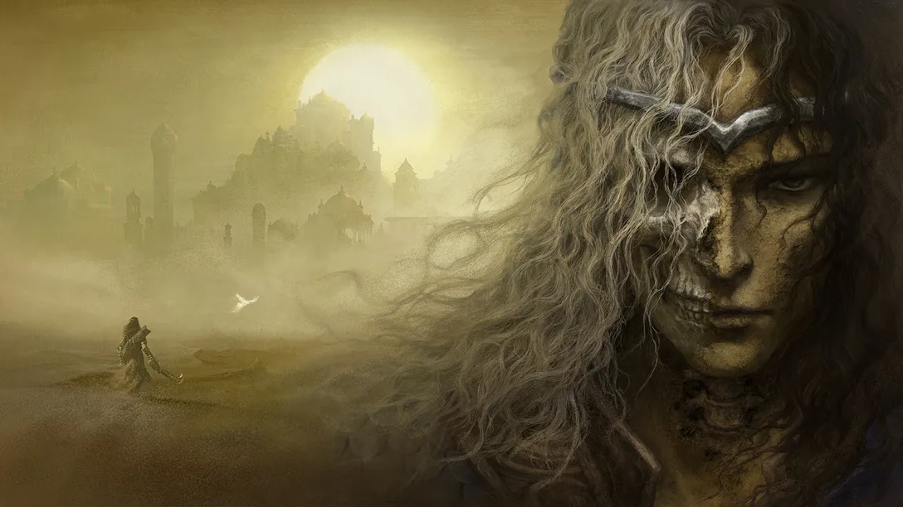
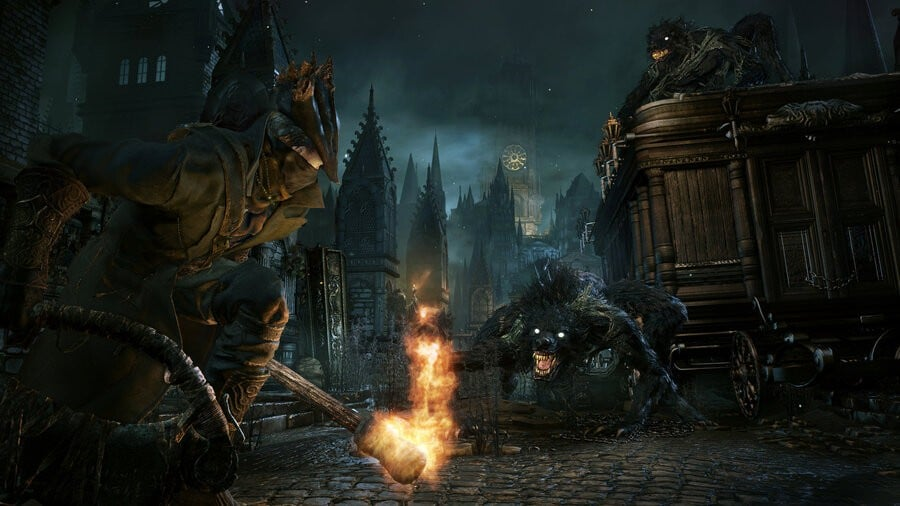
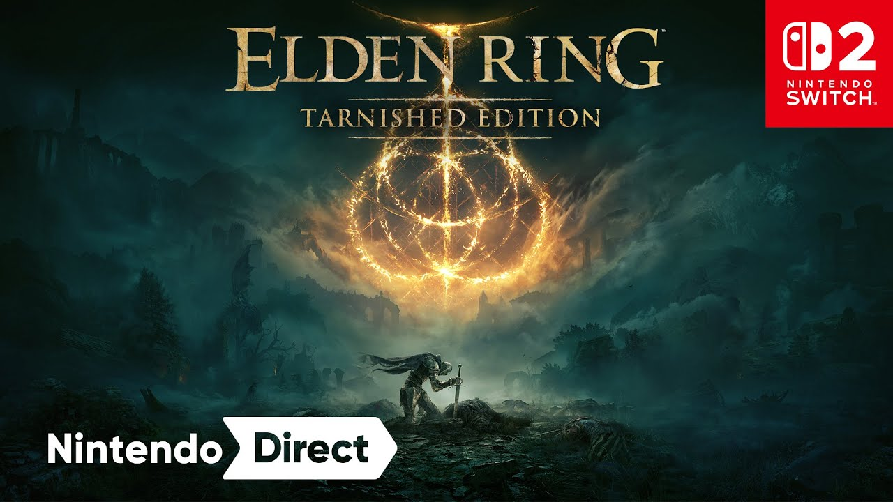
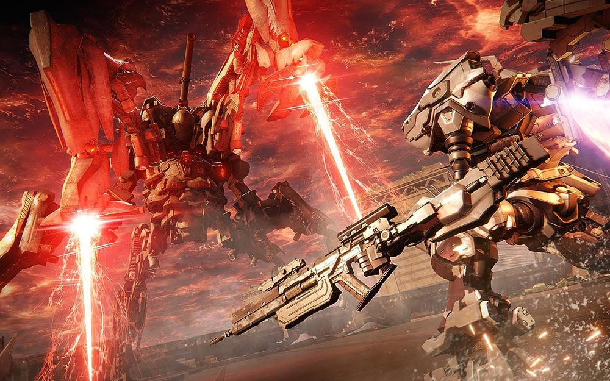

Lire l'article
Le DLC "The Forsaken Hollows" pour Elden Ring: Nightreign a été annoncé le 12 novembre 2025 lors du State of Play Japan. Il sortira le 4 décembre 2025 sur PS4, PS5, Xbox Series X/S et PC. Ce contenu additionnel introduit deux nouveaux héros jouables, des boss inédits, et une nouvelle zone souterraine à explorer. Elden Ring: Nightreign est un spin-off multijoueur coopératif où trois joueurs affrontent les forces de la Nuit dans une expédition de trois jours pour vaincre le redoutable Nightlord. Ce DLC introduit de nouveaux boss, des environnements inédits et des ajustements de gameplay centrés sur la coopération entre les trois héros.
Lire l'article
Les fans de Dark Souls ont peut-être trouvé leur prochain coup de cœur avec Loulan, The Cursed Sand, un action-RPG développé par un studio composé d’anciens talents de FromSoftware, dont Kenji Morimoto et Ayato Fujimura. Le jeu vient tout juste de dévoiler son premier trailer de gameplay, et l’ambiance comme le style de combat attirent déjà l’œil. Loulan nous entraîne dans un désert maudit où chaque affrontement demande précision et sang-froid. Le trailer dévoile des combats exigeants, quelques créatures massives et un système d’artefacts qui semble promettre une belle profondeur. Bref, un projet encore mystérieux, mais clairement à surveiller pour les amateurs d’action-RPG à l’ancienne.
Lire l'article
Franchement, on y croyait encore un peu, mais selon Gamesider, le remake de Bloodborne serait définitivement enterré par Sony. Plusieurs insiders affirment que le projet a été envisagé, mais qu’il n’a jamais dépassé le stade de la préproduction, faute de volonté claire du constructeur. C’est triste, surtout quand on voit l’engouement des fans et le potentiel énorme qu’aurait une version PS5 ou PC de ce chef-d’œuvre gothique. L’article revient aussi sur les rumeurs persistantes autour de Bluepoint Games, qui auraient pu s’en charger, mais rien n’a jamais été confirmé. En tant que fan de FromSoftware, ça fait mal au cœur, mais c’est cool de voir des sites comme Gamesider creuser le sujet avec sérieux et passion.
Lire l'article
Kadokawa et FromSoftware ont confirmé que le succès d’Elden Ring: Nightreign ouvre la voie à une version complète d’Elden Ring sur la Nintendo Switch 2. Prévue pour 2026, cette édition proposera l’intégralité du jeu avec ses extensions, optimisée pour la nouvelle console hybride. Les développeurs promettent une expérience fluide et fidèle malgré les contraintes techniques, afin de permettre aux joueurs nomades de découvrir l’univers de l’Entre-Terre partout où ils se trouvent.
Lire l'article
Selon le dernier rapport financier de Kadokawa, Elden Ring: Nightreign a franchi la barre des 5 millions de joueurs en seulement quelques mois. Ce spin-off coopératif a largement dépassé les attentes initiales du studio. FromSoftware a annoncé que de nouvelles mises à jour gratuites viendront enrichir l’expérience, avec des ajustements de gameplay et des événements saisonniers pour maintenir la communauté active jusqu’à la sortie du prochain gros projet du studio.